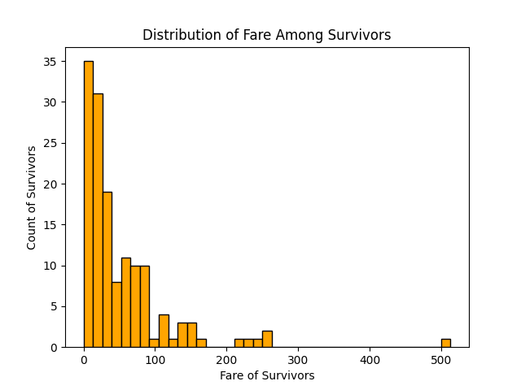
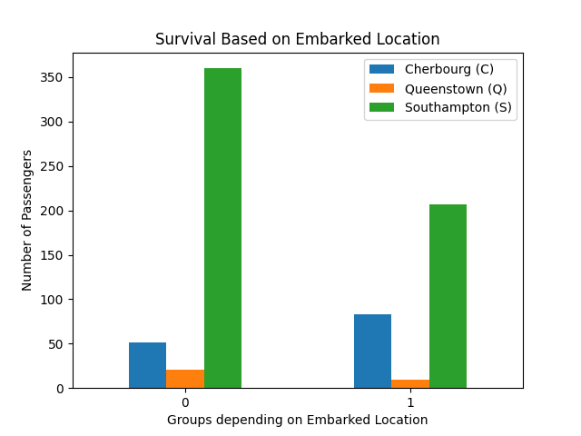
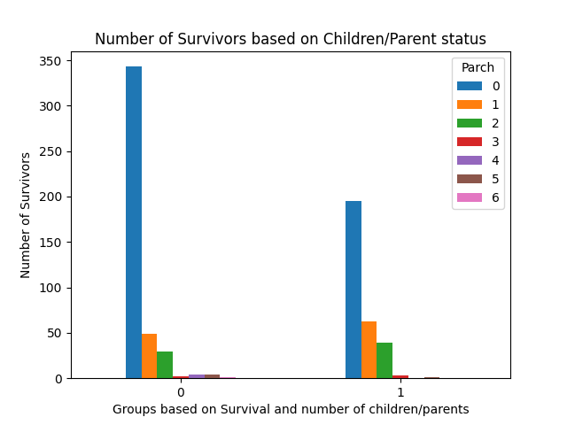

Titanic Dataset
Overview
- Description: The 1912 Titanic shipwreck, popularised in fiction with the 1997 James Cameron’s film, resulted in a death toll of 1502 out of 2224 total passengers due to the limited number of lifeboats available. A dataset available via the links Titanic Kaggle and Data Science Dojo Github, includes 12 variables and 891 rows representing a subset of the Titanic population.
The Titanic variables included: Name,
Ticket Number, Passenger ID,
Survival(0=No, 1=Yes),
Ticket Class(1 = 1st, 2 = 2nd, 3 = 3rd), Sex,
Age, Number of Siblings/Spouses Aboard,
Parents or Children Aboard, Ticket Number,
Passenger Fare, Cabin Number and
Embarked Location(C= Cherbourg, Q = Queenstown, S = Southampton).
Using the description available on Kaggle, Age was
estimated and fractional if less than 1 years old. In relation to
Number of Siblings/Spouses Aboard, only husbands and wives
were considered, ignoring other relationships such as fiances. In
relation to the variable, Parents or Children Aboard, some
children only traveled with a nanny resulting in a zero values.
The dataset contained missing values, especially in the
Age, Cabin and Embarked columns.
Thus, some of the results may be inconclusive as the complete dataset
was unavailable.
Through the use of the Pandas, Numpy,
Matplotlib and seaborn packages, the Titanic
Demographics were analysed and visualised. A combination of different
visualisation techniques were employed including: histograms, pie
charts, stacked and regular bar charts, and violin plots.
For the full code, this can be accessed via the github account Nathaniel
Pyle
Methodology and Results
Technologies: the packages that were used in this project were
matplotlib,Numpy,seaborn, andpandas.Methods and Results: The data was loaded into Python as a Panda’s dataframe, where the
index_col = 0. The original shape of the dataframe consisted of 891 rows with 12 columns. Using the ‘dtypes’ function in pandas, it was discovered that the columns were a combination of floats, integers and strings/objects, which was expected.
Using the ‘check_nan’ function in pandas, it was discovered was that there were NaN values present in the dataframe. If all rows were removed which contained NaN values, this would reshape of the Pandas dataframe from 891 rows to 183. This would significantly reduce the dataset by 79.46% and would be counterintuitive as this would reduce one’s ability to conduct Exploratory Data Analysis on the various demographics of Titanic survivors. Therefore, an alternative approach was taken.
Through a trial and error using different thresholds, using thresholds of 2, 3 , 9 and 10 did not change the number of rows in the Titanic dataframe. However using a threshold of 11 resulted in a reduction of 891 rows to 733. This indicates that most rows contained at least 11 valid values.
Printing the sum of the missing data for all columns, it was
discovered that the three columns which contained NaN data were
Age at 177, Cabin at 687 and
Embarked at 2. As previously mentioned, if these rows were
removed which contained NaN values, this would reduce the findings for
the other variables.
Thus, the alternative approach was to use a threshold of 11 to reduce
the total number of rows to 733. This resulted in a decrease in NaN
values in the following columns: Age from 177 to 19,
Cabin from 687 to 529, and Embarked had no
change. Overall, the number of NaN values was reduced from 866 in total
to 550, and with a percentage decrease in 36.49%. In addition to this,
NaN were kept as they did not significantly alter the Data Visualisation
process.
In addition to this, the following columns were dropped as they did
not provide any additional insight into the Titanic survival rate:
Passenger ID, Ticket Number,Name
and Cabin. Furthermore, no auxiliary metadata was presented
about the nature of these variables which could influence the rate of
survival.
Survivor was paired with the seven variables/columns left in the
Titanic Pandas dataframe:
Ticket Class(1 = 1st, 2 = 2nd, 3 = 3rd), Sex,
Age, Number of Siblings/Spouses Aboard,
Parents or Children Aboard, Ticket Number,
Passenger Fareand
Embarked Location(C= Cherbourg, Q = Queenstown, S = Southampton).
To accomplish this, the Pandas
groupby' function was used to create variouspandas.core.series`
one dimensional arrays. For many of these series, they were unstacked
where their structures were reshaped and converted into dataframes for
ease with plotting.
Through the use of the matplotlib, seaborn
and numpy packages, the following visualisations were
created.
- Visualisations:
Histogram Age Demographics:

Pie chart Passenger Class:

Stacked Bar chart based on Siblings/Spouses Aboard:

Bar chart based on Siblings/Spouses Aboard:

Number of Survivors compared by Sex:

Fare Distribution Among Survivors:

Violin Plot Fare Distribution Among Survivors:

Bar Chart Survival Based on Embarked Location:

Bar Chart Survival Based on Children and Parent Status:

Discussion
From the visualisations, the most influential factors in Titanic
Survival rates appear to be:
*Age: The histogram is right-skewed, showing that
younger passengers had higher survival rates, especially those under ten
years old.
*`Passenger Class: 37% of deceased passengers were in third class, compared to 12.3% in second class and 9.7% in first class, indicating that higher class passengers had a greater chance of survival.
*Sex:Most of the deceased were male, suggesting a
significant survival advantage for females.
*Passenger Fare: Passengers who paid lower fares had a
higher likelihood of survival, although there were some anomalies.
Further research could be conducted on:
*Survival Based on Siblings/Spouses Aboard There is
little differentiation between groups, with the exception of those with
no siblings or spouses aboard.
*Embarked Location: Southampton had significantly fewer
survivors compared to other locations. Further investigation could
clarify the cause of this disparity.
*Parents or Children Aboard: Results were generally
consistent across groups, except for those with no parents or children
aboard, who had fewer survivors.
Further Links
For more information about the Pandas and Matplotlib packages please access the following urls.
rmarkdown::render(“Titanic.Rmd”)